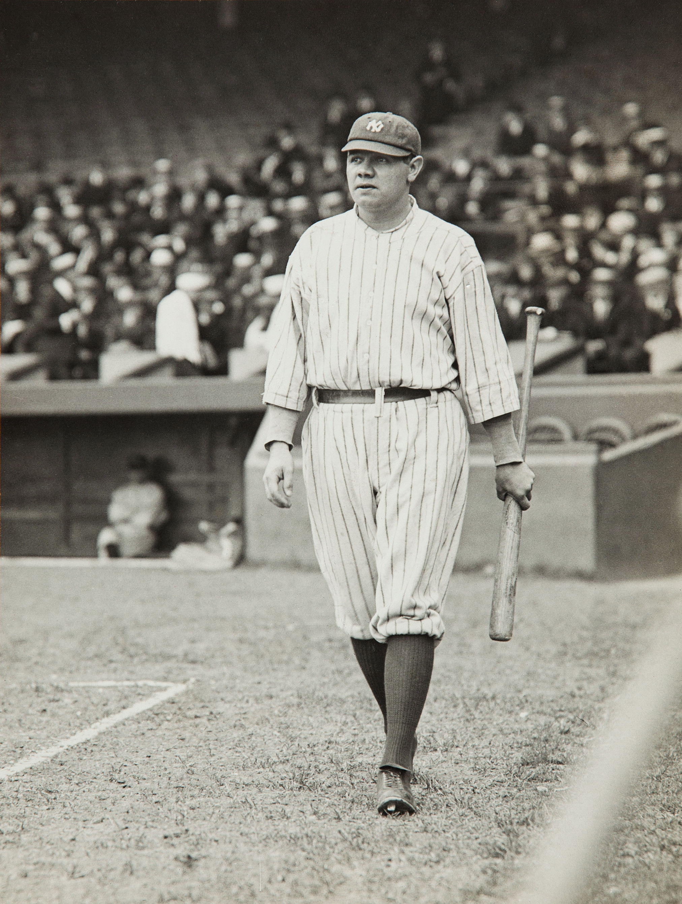

What does OPS+ mean?
On-base Plus Slugging Plus (OPS+) is a statistic that normalizes a player's OPS, it adjusts for small variables that might affect OPS scores (e.g. park effects) and puts the statistic on an easy-to-understand scale. A 100 OPS+ is league average, and each point up or down is one percentage point above or below league average. In other words, if a player had a 90 OPS+ last season, that means their OPS was 10% below league average. Since OPS+ adjusts for league and park effects, it's possible to use OPS+ to compare players from different years and on different teams. OPS+ is mostly used in the same way as wRC+ because both statistics are very similar.
What is considered as a good OPS+?
The league average hitter will have an OPS+ of 100, an above average hitter will have a 115-130 OPS+, a great player will have an OPS+ of 140-150, and an MVP level player will have an OPS+ of 160 or more.
2024 NL(National League) OPS+ Leaders (As of 9/26/2024)
1. LAD DH Shohei Ohtani: 188 OPS+
2. ATL DH Marcell Ozuna: 160 OPS+
3. ARI 2B Ketel Marte: 156 OPS+
4. PHI 1B Bryce Harper: 150 OPS+
5. LAD RF Mookie Betts: 150 OPS+
2024 AL(American League) OPS+ Leaders as of (9/26/2024)
1. NYY CF Aaron Judge: 226 OPS+
2. NYY RF Juan Soto: 177 OPS+
3. HOU DH/LF Yordan Alvarez: 172 OPS+
4. KCR SS Bobby Witt Jr.: 171 OPS+
5. OAK DH/LF Brent Rooker: 168 OPS+